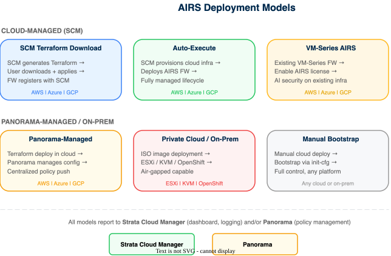

Prisma AIRS: Cloud Deployment Guide
Deployment-model-specific steps: from SCM wizard through verified firewall connectivity in AWS, Azure, and GCP
This guide takes you from an empty cloud account to a connected Prisma AIRS AI Runtime Firewall. It is self-contained: Phases A, B, and C cover the licensing, activation, and cloud onboarding that every deployment model needs, and you do not need to open another guide to complete them.
Six deployment models follow as independent phases. Choose the one that matches your cloud, management platform, and operational requirements; complete that phase, skip the others.
After deployment: continue to Phase 5: Security Configuration in the Core Network Intercept Guide to create AI Security Profiles, policy rules, and push configuration. Your firewall is deployed and connected at the end of this guide; security policy is the next stage.
Phases A, B, and C here are the same procedure as Phases 1 to 3 of the Core Network Intercept Guide, shared from one source so the two cannot drift. If you have already worked through them there, confirm you have a valid license, active Strata Logging Service, device certificate PIN, deployment profile, and onboarded cloud account, then start at Phase 1.
Architecture Overview
Choose a deployment model based on your cloud provider, management platform, and operational requirements. Each model produces the same outcome (one or more Prisma AIRS AI Runtime Firewall instances inline in your cloud network path) but differs in automation level, cloud support, and management options.

| Model | Clouds | Management | FW Type | Who Runs TF? | Cloud Mesh? | AI + K8s? | Best For |
|---|---|---|---|---|---|---|---|
| SCM Terraform Download | AWS, Azure, GCP | SCM or Panorama | AIRS or VM-Series | You | No | Yes | Full infrastructure control |
| Auto-Execute | AWS, Azure | SCM only | AIRS only | SCM | Yes | Yes | Fastest deployment |
| Panorama-Managed | AWS, Azure, GCP | Panorama only | AIRS | You | No | Yes | Existing Panorama environments |
| VM-Series from SCM | AWS, Azure, GCP | SCM or Panorama | VM-Series only | You | No | No | Non-AI workloads (traditional NGFW) |
| Private Cloud | ESXi, KVM, OpenShift | SCM or Panorama | AIRS | N/A (ISO) | No | Yes | On-premises / private cloud |
| Manual Bootstrap | All | SCM or Panorama | AIRS | You | No | Yes | Brownfield environments |
- Want the fastest deployment with zero Terraform? → Phase 2: Auto-Execute (AWS/Azure, SCM only)
- Need full control over infrastructure? → Phase 1: SCM Terraform Download
- Already use Panorama for centralized management? → Phase 3: Panorama-Managed
- Protecting non-AI workloads alongside AI traffic? → Phase 4: VM-Series
- Deploying on-premises (ESXi/KVM)? → Phase 5: Private Cloud
- Existing infrastructure you cannot redeploy? → Phase 6: Manual Bootstrap
The firewall type determines which traffic can be inspected. Only Prisma AIRS AI Runtime Firewall supports AI, K8s, and cluster traffic.
| Traffic Type | Prisma AIRS Runtime FW | VM-Series |
|---|---|---|
| AI Traffic (App → AI Model) | Yes | No |
| Non-AI Traffic + namespaces (e.g., kube-system) | Yes | No |
| Cluster Traffic | Yes | No |
| Non-AI, non-cluster traffic | Yes | Yes |
Selecting any namespace in the SCM wizard disables the VM-Series option. Only Prisma AIRS AI Runtime Firewall can secure AI workloads and Kubernetes namespaces.
Deployment model selected. Confirm the chosen model supports your target cloud provider, management platform, and traffic types before proceeding.
Phase A: Prerequisites
Gather these before starting. Missing any one will block a later phase.
Network Intercept requires an active Prisma AIRS AI Runtime Firewall license, funded through Software NGFW credits.
| Item | Details |
|---|---|
| License type | BYOL (bring-your-own-license) using an auth code from the Customer Support Portal |
| Credit model | Fund a credit pool, then create deployment profiles specifying vCPU count per instance and total instances |
| Minimum vCPUs | 4 vCPUs per Prisma AIRS AI Runtime instance |
| Transaction limit | 10,000 AI transactions per day per vCPU |
| Bundled security services | AI App/Model/Data Protection, Cloud Identity Engine, SCM Pro, Enterprise DLP, ATP, Advanced URL Filtering, Advanced WildFire, Advanced DNS Security, GlobalProtect |
Prisma AIRS deployment profiles are now available as a la carte options (you choose the profile type: VM-Series vs. Prisma AIRS). Legacy AI Runtime Security (Instance) bundled profiles are deprecated. The security services within a Prisma AIRS profile are bundled and pre-configured; they cannot be individually customized.
Confirm you have received your purchase confirmation email with an activation link, and that your credit pool has sufficient credits for the planned number of instances and vCPUs.
Confirm credentials for both management platforms:
| Platform | URL | Purpose |
|---|---|---|
| Customer Support Portal | support.paloaltonetworks.com | License activation, deployment profile creation, device certificate generation, auth codes |
| Strata Cloud Manager | stratacloudmanager.paloaltonetworks.com | AI security profile configuration, cloud account onboarding, discovery dashboard, firewall management |
| Panorama (if applicable) | Your Panorama management server | AI security profile and policy configuration for Panorama-managed deployments. Requires CloudConnector Plugin 2.1.0. |
Strata Cloud Manager and Tenant Service Groups (TSGs) are available in: US, UK, India, Canada, Singapore. Your cloud deployment can be in any supported cloud region, but the management plane must be in one of these regions.
Log in to both the Customer Support Portal and Strata Cloud Manager. If using Panorama, confirm the CloudConnector Plugin 2.1.0 is installed.
The firewall management interface and the AI security cloud service require outbound connectivity to these endpoints:
| Destination | Port(s) | Purpose |
|---|---|---|
ocsp.paloaltonetworks.com, crl.paloaltonetworks.com, ocsp.godaddy.com |
TCP 80 | OCSP / CRL certificate validation |
api.paloaltonetworks.com and certificate endpoints |
TCP 443 | Licensing, updates, cloud service connectivity |
*.gpcloudservice.com |
TCP 443–444 | Cloud-delivered security services |
api.sase.paloaltonetworks.com |
TCP 443 | SCM management API |
From the management subnet where the firewall will be deployed, confirm outbound HTTPS connectivity to api.paloaltonetworks.com and api.sase.paloaltonetworks.com using curl -v or equivalent.
| Component | Minimum Version | Notes |
|---|---|---|
| Prisma AIRS Runtime Firewall | PAN-OS 11.2.2 | Required for deployment profile compatibility |
| Panorama (if managing firewalls) | PAN-OS 11.2.5 | Required for AI Security profile support |
| CloudConnector Plugin (Panorama) | 2.1.0 | Required for Panorama to connect to the AI security cloud service |
| Universal Image | PAN-OS 11.2.11 or 12.1.5 | Single image for both VM-Series and Prisma AIRS. Supports x86 and ARM. |
| Custom Error Response | PAN-OS 11.2.11 or 12.1.8 | Returns HTTP error instead of TCP reset on block action (Panorama only) |
| Terraform | > 1.3 and < 2.0 | Required for SCM Terraform Download and Panorama-Managed deployment models |
Confirm the PAN-OS version of your target deployment is 11.2.2 or later. If using Panorama, confirm version 11.2.5+ and CloudConnector Plugin 2.1.0 installed.
Prepare the following for your target cloud provider(s). These apply regardless of deployment model.
Account & Infrastructure
- AWS account with administrative access to create IAM roles, policies, VPCs, and EC2 instances
- Subscribe to the Prisma AIRS image in AWS Marketplace (same listing as VM-Series due to Universal Image)
- IAM permissions to create CloudFormation stacks or Terraform resources
- VPC with management, data, and HA subnets planned
- Terraform > 1.3 and < 2.0
S3 Bucket for Discovery Logs
- Navigate to S3 in the AWS Management Console.
- Click Create bucket. The bucket region must match the region where your AI models run.
- Enter a unique bucket name and click Create bucket.
VPC Flow Logs
- Navigate to VPC Dashboard → Subnets.
- Select the subnet for your application VPC and open the Flow logs tab.
- Create or edit a flow log:
- Destination: Send to the S3 bucket created above (enter the bucket ARN)
- Log record format: Custom Format — select all Standard attributes
- Partition logs by time: Every 1 hour (60 mins)
Amazon Bedrock Model Invocation Logging
- In the AWS Bedrock Console, navigate to Settings under Bedrock Configurations.
- Toggle Model invocation logging to enable.
- Choose S3 only as the logging destination.
- Select the S3 bucket created above and click Save settings.
EKS Authentication (if using EKS)
- In the EKS Console, click your cluster → Access tab → Manage access.
- Under Cluster authentication mode, select EKS API and ConfigMap.
- If Public endpoint access is enabled, add these IP addresses under Advanced settings:
# Default SCM discovery IPs
34.71.64.3/32
34.28.60.186/32
# Germany / Netherlands region
34.32.8.22/32
# Australia region
34.116.76.243/32IAM Role for VM Model Invocation
- In IAM, create a role with a trust policy allowing
ec2.amazonaws.comto assume the role. - Attach the
bedrock:InvokeModelpermission to the role:
{
"Version": "2012-10-17",
"Statement": [{
"Effect": "Allow",
"Action": "bedrock:InvokeModel",
"Resource": "*"
}]
}Pod Identity Associations (if using EKS)
- In the EKS Console, select your cluster → Access → Pod Identity associations.
- Assign IAM roles to Kubernetes service accounts so pods can access AI model endpoints.
Account & Infrastructure
- Azure subscription with administrative access
- Subscribe to the Prisma AIRS image in Azure Marketplace
- Azure CLI installed (install guide)
- Resource Group and VNet with management, data, and HA subnets planned
- Terraform > 1.3 and < 2.0
Azure Storage Account
- In the Azure Portal, click Create a resource → search Storage account.
- Select your Subscription, Resource Group, and Region.
- Enter a unique Storage account name.
- Under the Networking tab, select Enable public access from selected virtual networks and IP addresses.
- Add the following IP addresses:
# Default SCM discovery IPs
34.71.64.3
34.28.60.186
# Germany / Netherlands region
34.32.8.22
# Australia region
34.116.76.243- Click Review + create → Create.
Enable Network Watcher
- In the Azure Portal, search for Network Watcher.
- Select your region and click Enable.
Virtual Network Flow Logs
- In Network Watcher, select Flow Logs → + Add flow log.
- Select your Subscription. Under Flow log type, choose Virtual network.
- Select the Storage Account created above.
- Set Retention (days) to 30.
- Click Review + Create → Create.
Azure OpenAI Diagnostic Settings
- In the Azure Portal, open your OpenAI resource.
- Navigate to Diagnostic settings → Add diagnostic setting.
- In log categories, select Request and Response Logs.
- Enable Archive to a storage account and select the Storage Account.
- Click Save.
Flow logs and audit logs must be older than 3 hours to be scanned. Azure continuously overwrites the log file in the Storage Account, so discovery only scans files three hours after creation to prevent data loss.
Azure Roles (for multi-subscription onboarding)
If onboarding more than one Azure subscription on the same tenant, assign these roles on the onboarding application:
- Azure Kubernetes Service Cluster User Role
- Storage Blob Data Reader
- Reader
Azure requires manual route table association to steer traffic through the firewall. Plan your UDR (User-Defined Route) configuration before deployment.
Account & Infrastructure
- GCP project with administrative access
gcloudCLI installed- VPC with management, data, and HA subnetworks planned
- Terraform > 1.3 and < 2.0
VPC Flow Logs
- In the GCP Console → VPC Networks, select the VPC with workloads to protect.
- Click the SUBNETS tab and select all subnets where workloads are present.
- Click FLOW LOGS → Configure.
- Set:
- Aggregation Interval: 5 Sec
- Metadata annotations: Enabled
- Sample rate: 100%
- Click SAVE.
Data Access Audit Logs for Vertex AI
- In the GCP Console, search for Audit Logs.
- Search for and select Vertex AI API.
- Enable the Data Read permission type.
- Click SAVE.
Cloud Storage Bucket
- In Cloud Storage, click CREATE.
- Enter a globally unique bucket name.
- Choose Multi-region for location type.
- Choose Standard for storage class.
- Select Uniform access control.
- Click CREATE.
Log Router Sink
- In the GCP Console, search for Log Router → Create sink.
- Enter a sink name. For Sink destination, choose Cloud Storage Bucket and enter the bucket name.
- Add this inclusion filter (replace placeholders):
(logName =~ "logs/cloudaudit.googleapis.com%2Fdata_access" AND protoPayload.methodName:("google.cloud.aiplatform.")) OR ((logName="projects/<GCP_PROJECT_ID>/logs/compute.googleapis.com%2Fvpc_flows") AND (resource.labels.subnetwork_name="<SUBNET_1>" OR resource.labels.subnetwork_name="<SUBNET_2>"))- Click Preview logs to verify, then Create sink.
If your AI models are in a different GCP project, create an additional Log Router sink in that project using the same bucket. Copy the sink’s Writer identity email and grant it Storage Object Creator role on the bucket.
IAM Permissions
Assign the following permissions to the user deploying Terraform:
cloudasset.assets.listResource
cloudasset.assets.listAccessPolicy
cloudasset.feeds.get
cloudasset.feeds.list
compute.machineTypes.list
compute.networks.list
compute.subnetworks.list
container.clusters.list
pubsub.subscriptions.consume
pubsub.topics.attachSubscription
storage.buckets.list
aiplatform.models.listGCP Service Identity
Create the Cloud Asset service identity required for Terraform deployment:
gcloud beta services identity create \
--service=cloudasset.googleapis.com \
--project=<your_gcp_project_id>AWS: S3 bucket exists in the same region as AI models, VPC Flow Logs are active, Bedrock invocation logging is enabled, EKS access is configured.
Azure: Storage Account created with IP allowlisting, Network Watcher enabled, VNet Flow Logs active (30-day retention), OpenAI Diagnostic Settings configured.
GCP: VPC Flow Logs active (5-sec aggregation, 100% sample), Vertex AI audit logs enabled, Cloud Storage bucket created, Log Router sink active, service identity created.
If you plan to manage AIRS firewalls through Panorama, complete these additional prerequisites. Skip this step if using SCM-only management.
| Component | Requirement |
|---|---|
| Panorama Software | Version 11.2.5 or above |
| Prisma AIRS Firewall | Version 11.2.5 or above |
| CloudConnector Plugin | Version 2.1.0 |
| Enterprise DLP Plugin | Version 5.0.5 or above |
| Deployment Mode | Standalone or High Availability (HA) |
Preparation Steps
- Deploy Panorama in standalone or HA mode. Copy and save the active/passive Panorama IP address.
- Generate the VM Auth Key on Panorama.
- (Optional) For public-cloud firewalls, add the firewall’s public IP under
Panorama→Setup→Interfaces→Management. - Install CloudConnector Plugin 2.1.0 and install the Panorama Device Certificate.
- Enable and verify the cloud connector plugin:
# Enable the cloud connector
admin@Panorama> request plugins cloudconnector enable basic
# Verify connection status
admin@Panorama> show plugins cloudconnector status
# Expected output:
# pass
# CloudConnector plugin is enabled.
# Connectivity to region ... is a success.- Install Enterprise DLP Plugin 5.0.5 or above on Panorama.
- Set Telemetry region to Americas (recommended).
- (Optional) Onboard Panorama to Strata Logging Service for log forwarding.
- Enable automatic configuration push to managed firewalls on the template stack.
- Commit → Commit to Panorama.
Panorama cannot centrally manage AIRS image upgrades. Workaround: download the image and manually deploy via the firewall web interface or CLI.
It may take more than 30 minutes for Panorama to connect to Strata Logging Service after enabling the CloudConnector plugin.
The show plugins cloudconnector status command returns pass. The CloudConnector plugin shows as enabled with successful connectivity.
Phase B: License Activation & Foundation
Activate your license, Strata Logging Service, and device certificate. These are the foundation everything else builds on.
- Click the activation link in your purchase confirmation email.
- Log in to the Hub with your Palo Alto Networks Customer Support credentials.
- Select your Prisma AIRS AI Runtime Firewall subscription.
- Associate the subscription with your Customer Support account.
- Confirm the activation. The license provisions the following bundled services:
- AI App Protection, AI Model Protection, AI Data Protection
- Cloud Identity Engine & SCM Pro
- Enterprise DLP
- Advanced Threat Prevention, Advanced URL Filtering, Advanced WildFire, Advanced DNS Security
- GlobalProtect
In the Customer Support Portal, navigate to Products → Software/Cloud NGFW Credits. An active credit pool for AIRS should appear.
Strata Logging Service stores AI security logs, threat logs, and provides data for the discovery dashboard and SLR reports.
- Click the SLS activation link in your confirmation email (or navigate from the Hub).
- Select your Strata Logging Service subscription and click
Activate Subscription. - Log in with your Palo Alto Networks Customer Support credentials.
- Select the Customer Support account to associate.
- Configure your Tenant Service Group (TSG):
- New TSG: Create a new tenant service group and provide a name.
- Existing TSG: Select an existing TSG. A tenant can have only one SLS instance.
- Select the region for your SLS instance.
- Click
Add Instanceto deploy SLS to the TSG. - Verify storage space and region settings.
- Accept the Terms and Conditions and click
Activate Now.
When your SLS subscription expires, you have a 30-day grace period to renew before log data is deleted. Set a calendar reminder for your renewal date.
The Strata Logging Service license must be active before onboarding cloud accounts in Phase C. Expired logging licenses require renewal before proceeding.
In the Hub, navigate to your TSG and confirm the SLS instance shows as Active with the correct region.
The device certificate enables secure communication between the firewall and Palo Alto Networks licensing servers and Cloud-Delivered Security Services. This is mandatory before deploying a Prisma AIRS AI Runtime Firewall.
- Log in to the Customer Support Portal.
- Navigate to
Products→Device Certificates→Generate Registration PIN. - Enter a description (e.g., "AIRS Network Intercept Production").
- Select a PIN expiration period.
- Click
Generate Registration PIN. - Immediately save both values:
- PIN ID
- PIN Value
Registration PINs have an expiration date. If the PIN is not used before it expires, return to the Customer Support Portal and generate a new one. Plan to use it within the same session as deployment.
Confirm both the PIN ID and PIN Value are saved securely. These are required during firewall bootstrap.
A deployment profile defines your resource allocation (vCPUs per instance, number of instances) and bundles the required security services.
Part 1: Create the Profile
- In the Customer Support Portal, navigate to
Products→Software/Cloud NGFW Credits. - Locate your credit pool and click
Create Deployment Profile. - Select product type: Prisma AIRS: AI Runtime Security (Firewalls).
- Select PAN-OS version: PAN-OS 11.2.2 and above.
- Configure the profile:
- Deployment Profile Name: A descriptive name (e.g.,
AIRS-NetIntercept-Prod) - Number of instances: Planned firewall count
- vCPUs per instance: Minimum 4 (impacts transaction limits: 10K AI transactions/day/vCPU)
- Deployment Profile Name: A descriptive name (e.g.,
- Optionally configure Panorama management with Log Collector if using Panorama.
- Click
Create Deployment Profile.
Part 2: Associate the Profile with a TSG
- In the credit pool details, locate your new profile and click
Finish Setup. - Select your Customer Support Account.
- Select the Tenant (same TSG as your SLS instance — verify SLS is enabled).
- Select the Region.
- Select your deployment profile and click
Done. - Enable Cloud Identity Engine (recommended).
- Accept the Terms and Conditions.
- Click
Activate. - Record the Auth Code that appears — this is required during firewall deployment.
The initial association between the deployment profile and TSG can take up to 30 minutes to complete. Wait for the association to finish before proceeding to Phase C.
When modifying deployment profiles, do not uncheck existing profiles. This breaks TSG associations and can disrupt active firewall deployments.
In the Customer Support Portal, your deployment profile shows as Active with the correct TSG association. In the Hub, navigate to Common Services → Tenant Management to verify. Record the Auth Code.
Phase C: Cloud Account Onboarding & Discovery
Onboard your cloud accounts in Strata Cloud Manager to enable AI asset discovery. This surfaces your AI workloads, models, traffic flows, and protection status before deploying firewalls.
- Log in to Strata Cloud Manager.
- Navigate to
AI Security→AI Runtime→AI Runtime Firewall. - Click the Cloud Account Manager (cloud icon).
- Click
Add Cloud Account.
The Cloud Account Manager interface loads and displays the Add Cloud Account option.
Follow the onboarding workflow for your cloud provider. Each cloud has specific IAM configuration steps.
AWS Cloud Account Onboarding
- Select AWS as the Cloud Service Provider and click Next.
- Enter a unique Name for the cloud account (max 32 characters) and click Next.
- Select the permissions to apply. See AWS Required Permissions for full details:
- Discovery — pre-selected, cannot be disabled
- Fully orchestrated security VPC — read/write permissions in your security VPC
- Fully automated traffic redirection — read/write in application VPCs (requires security VPC enabled)
- IP-Tag Harvesting — collects IP-to-tag mappings for tag-based security policy
- Configure Application Definition to define how assets are grouped:
- Container workloads: By namespace (default), cluster name, or tag
- Virtual machines: By subnet name, VPC (default), or tag
- Serverless: By subnet name, VPC (default), or tag
- Enter the S3 Bucket name created in the prerequisites.
- Enter a Role Name (alphanumeric + hyphens only, max 19 characters).
- Click Download Terraform.
Execute Terraform
# Unzip and navigate to the onboarding folder
unzip aws-onboard-terraform.zip
cd panw-discovery-<tsg-id>-onboarding/aws
# Deploy
terraform init
terraform plan
terraform applyCapture the cross_account_role_arn from the Terraform output:
Outputs:
cross_account_role_arn = "arn:aws:iam::10xxxx684868:role/airs-prod-role-2"Complete Onboarding
- Copy the Role ARN from the Terraform output and paste it into SCM.
- Click Done.
- In the EKS Console, add AmazonEKSAdminViewPolicy to IAM access entries:
- Navigate to your EKS cluster → Access tab → IAM access entries
- Click Create access entry, find the IAM principal ARN created by the onboarding Terraform
- Add AmazonEKSAdminViewPolicy under Policy name
Initial data populates in SCM in approximately 30 minutes. Flow logs may take up to 1 hour to appear on the dashboard.
For existing VM-Series or AIRS firewalls to be discovered, tag your EC2 instances:
paloaltonetworks.com-monitored: enable
serialNumber: <serial-number-or-comma-separated-list>Azure Cloud Account Onboarding
- Select Azure as the Cloud Service Provider and click Next.
- Enter the following:
- A unique Name for the cloud account (max 32 characters)
- Azure Tenant ID
- Azure Subscription ID
- (Optional) To discover Kubernetes clusters by Cluster Name, enable Bring your own Azure virtual network:
- In Azure Portal: Kubernetes services → [Your Cluster] → Settings → Networking
- Select Azure CNI Overlay as the Network plugin
- Enable Bring your own Azure virtual network
- Click Next and select permissions. See Azure Required Permissions:
- Discovery — pre-selected, cannot be disabled
- Fully orchestrated security VNet — read/write in security VNet
- Fully automated traffic redirection — read/write in application VNets (requires security VNet)
- IP-Tag Harvesting — IP-to-tag collection for tag-based policy
- Configure Application Definition (same workload options as AWS).
- Enter the Storage Account Name (lowercase letters and numbers only, 3–24 characters).
- Click Download Terraform.
Execute Terraform
# Unzip and navigate to the onboarding folder
unzip azure-onboard-terraform.zip
cd panw-discovery-<tsg-id>-onboarding/azr
# Login to Azure tenant
az login -t <Tenant_Id>
az account set -s <Subscription_Id>
# Deploy
terraform init
terraform plan
terraform applyComplete Onboarding
- In the Azure Portal, verify logs are appearing in Storage Account → Data Storage → Containers → Insight flow logs.
- Return to SCM and click Done.
Initial data populates in SCM in approximately 15 minutes. Flow logs may take up to 3 hours to appear (Azure only scans logs older than 3 hours to prevent data loss from overwrites).
For existing firewalls to be discovered, tag your Virtual Machines:
paloaltonetworks.com-monitored: enable
serialNumber: <serial-number-or-comma-separated-list>GCP Cloud Account Onboarding
- Select GCP as the Cloud Service Provider and click Next.
- Enter the following:
- A unique Name for the cloud account (max 32 characters)
- GCP Project ID
- Storage Bucket name (created in the prerequisites)
- Configure Application Definition (same workload options as AWS/Azure).
- Enter a Service Account Name (lowercase letters and numbers only, 3–24 characters, one per project).
- Click Download Terraform.
Execute Terraform
# Unzip and navigate to the onboarding folder
unzip gcp-onboard-terraform.zip
cd panw-discovery-<tsg-id>-onboarding/gcp
# Deploy
terraform init
terraform plan
terraform applyCapture the service_account_email from the Terraform output.
Complete Onboarding
- Return to SCM and click Done (there is a ~10-second delay before the button enables).
Initial data populates in SCM in approximately 15 minutes.
For existing firewalls, tag your Compute Engine instances:
paloaltonetworks_com-monitored: enable
serialnumber: <serial-number-or-comma-separated-list>GCP uses underscores instead of dots in tag keys (paloaltonetworks_com) and lowercase for the serial number key (serialnumber).
For container workloads across all clouds, annotate pods with the Palo Alto Networks label "paloaltonetworks.com/firewall": "pan-fw" to enable protection. This annotation is required in addition to the application definition configuration.
In the Cloud Account Manager, your onboarded account shows as Active. The sync icon indicates configuration is syncing from SCM to the cloud account. Wait for the cloud-specific discovery timing before expecting data to populate.
The Cloud Asset Map provides a geographical view of your cloud regions, showing resource distribution and protection status.
- Navigate to
AI Security→AI Runtime Firewall→Cloud Asset Map. - Review the infrastructure view for your onboarded cloud accounts.
- Identify regions and VPCs/VNets marked as:
- Green — Fully protected
- Orange — Partially protected
- Red — Unprotected
- Drill into specific regions to see VPC-level details, applications, and traffic flows.
The topology view shows relationships between components and helps identify unprotected traffic paths that need Network Intercept protection.
Initial discovery may take several minutes after onboarding. Deleted cloud assets can continue to appear in the UI for up to 24 hours.
The Cloud Asset Map displays your cloud regions with VPC/VNet details. Unprotected traffic paths are visible in red/orange, helping inform your firewall placement decisions in the deployment model you choose below.
The AI Traffic and Network Risk Analysis views reveal which applications communicate with AI models, which traffic is protected, and where threats are occurring.
- Navigate to
AI Security→AI Runtime Firewall. - Select the Operational view for traffic analysis.
- Review the three risk analysis views:
| View | Traffic Direction | What It Shows |
|---|---|---|
| Models | East-west (App → AI Model) | Which apps communicate with AI models; model endpoint protection status |
| Internet | Outbound (App → External) | Internet-facing assets; safe vs. unsafe destinations accessed by apps |
| Users | Inbound (External → App) | Unprotected traffic flows; threat actors attempting unauthorized access |
- Select the Security view for threat assessment — threats prioritized by urgency and risk type.
- Use Add Protection icons to identify where firewalls should be deployed between network segments.
At least one of the three views (Models, Internet, Users) shows discovered traffic flows. Unprotected flows are highlighted, informing firewall placement decisions.
Agent Discovery identifies AI agents built through cloud provider platforms (AWS Bedrock Agents, Azure AI Foundry / OpenAI Agents).
- AWS Bedrock Agents — Configuration discovery + runtime interaction monitoring (agent-to-model, agent-to-tool, agent-to-agent). Requires S3 bucket access for invocation log analysis.
- Azure AI Foundry / OpenAI Agents — Configuration discovery (runtime monitoring support is pending).
After enabling agent discovery, discovered agents appear as Protected or Unprotected with Sankey-style diagrams showing agent interactions, dependencies, knowledge bases, and tool usage.
Reference: Agent Discovery Documentation
If agent discovery is enabled, AI agents from your cloud accounts appear in the discovery dashboard with protection status indicators.
Phase 1: SCM Terraform Download
The primary deployment path. Generate a Terraform template from the SCM wizard, download it, and apply it in your cloud environment. Supports AWS, Azure, and GCP with SCM or Panorama management.
- Log in to Strata Cloud Manager.
- Navigate to
AI Security→AI Runtime Firewall. - Click
Add Protections(the+icon).
The Firewall Deployment wizard opens with the cloud provider selection screen.
- Select your Cloud Service Provider (AWS, Azure, or Google Cloud).
- Click
Next. - In Firewall Placement, select the traffic streams to inspect:
- AI queries and responses — application-to-AI-model traffic
- Inbound traffic to cloud applications — user-to-application traffic
- Outbound traffic from cloud applications — application-to-internet traffic
- Inter VPC/VNet communication — application-to-application traffic
- Select All Traffic — inspect all streams
- Select Download Terraform templates and execute on my own as the deployment method.
- Click
Next.
The wizard advances to the Regions & Applications screen with your selected cloud provider and traffic streams.
- Select your cloud account from the onboarded accounts list.
- Select the region where applications will be protected.
- In Selected applications, choose the applications to secure from the discovered list.
Available applications are determined by the application definition criteria configured during cloud account onboarding. If expected applications are missing, review the application definition settings in the Cloud Account Manager.
Cloud-specific configuration for application VPC/VNet connectivity:
- For each application, configure the GWLB Endpoint CIDR & Zone Pair:
- Select the zone for GWLB endpoint creation.
- Enter the CIDR IP address of an available (unused) subnet within your application VPC.
In the AWS Management Console, navigate to VPC, select your application VPC, and record the IPv4 CIDR range. The GWLB endpoint CIDR must fall within this range.
- To add an undiscovered VNet, select the Added vNet tab:
- Enter the VNet Name (from the Azure portal →
Virtual Networks). - Enter the VNet CIDR.
- Enter the Resource Group Name.
- Enter the Cluster ID (if applicable).
- Enter the VNet Name (from the Azure portal →
- For each application, set the Public IP address on the External Load Balancer (ELB):
- Auto generate — assigns an ephemeral IP automatically.
- Input manually — enter a pre-created static IP. See GCP Static External IP Addresses.
- To add an undiscovered VPC, select the Undiscovered VPC(s) tab:
- Enter VPC Name, VPC CIDRs, optional K8s pod CIDRs, optional K8s service CIDRs, and Cluster ID.
At least one application or VPC/VNet is selected with the correct region and zone configuration.
Traffic steering inspection is available when namespace-level applications are selected. This allows granular control over which CIDRs are inspected or bypassed.
- Select a namespace from the applications list.
- Configure traffic handling per namespace (limit: 10 CIDRs per cluster):
- Inspect certain CIDRs — only inspect traffic from specified subnet ranges.
- Bypass certain CIDRs — exclude traffic from specified subnet ranges.
When protecting traffic from namespaces, select only the namespace, not its parent VPC. The same GWLB endpoint cannot be used for both VPC and namespace-level protection in the same zone. Selecting both causes deployment failure.
For container applications, all traffic to and from the applications is protected by default. Use traffic inspection options only when granular CIDR-level control is needed.
Traffic inspection configuration shows the selected namespaces with inspect/bypass CIDRs applied (or left at default for full protection).
Configure the firewall type, instance count, zones, instance size, and scaling behavior.
- In Deployment type, select
AI Runtime Security.- Select
VM-Seriesonly if protecting non-AI, non-cluster traffic exclusively. See Phase 4.
- Select
- Optionally enable Auto-Deploy Security (disabled by default).
- Enter the number of firewalls to deploy.
- Select zones from the available list. Firewall zones must cover all application zones selected in Step 1.3.
- Choose the instance type for the security VM (minimum 4 vCPUs).
- In Firewall Scaling, select
StaticorDynamic.
Firewall zones must include every availability zone used by your selected applications. For example, if App1 uses us-west-2a and us-west-2c, and App2 uses us-west-2b, the firewall deployment must include all three zones.
When Dynamic scaling is selected, configure the following additional parameters:
- Set the Number of Firewalls to Deploy as a range (minimum to maximum).
- Enter the CloudWatch Namespace (AWS) or equivalent metric namespace.
- Set the Update Interval (1–60 minutes).
- Select one or more Autoscaling Metrics and configure thresholds for scale-in and scale-out.
- Click
Apply.
| Metric | Description |
|---|---|
Dataplane CPU Utilization (%) | Traffic load on the firewall dataplane |
Dataplane Packet Buffer Utilization (%) | Buffer usage; prevents packet drops during traffic bursts |
panSessionConnectionsPerSecond | New connection establish rate per second |
panSessionThroughputKbps | Throughput in Kbps |
panSessionThroughputPps | Packets per second |
Sessions Active | Total active sessions in the flow lookup table |
Session Utilization (%) | Combined TCP/UDP/ICMP/SSL session utilization |
SSLProxyUtilization (%) | SSL forward proxy session utilization |
After traffic decreases and firewalls deactivate, the system automatically removes instances from inventory and returns licenses to the credit pool.
Deployment parameters show AI Runtime Security as firewall type with the correct instance count, zones, instance type, and scaling configuration.
IP addressing differs by cloud provider. Configure the security VPC/VNet CIDR and transit/peering connectivity.
- Enter the CIDR for security VPC — an unused VPC CIDR range. Locate existing VPC CIDRs in the AWS Console →
VPC. - In Create transit gateway:
- No — select an existing TGW ID from the dropdown (find it in
VPC Dashboard→Transit Gateways). - Yes — optionally enter the ASN for the new Transit Gateway. See Create a Transit Gateway.
- No — select an existing TGW ID from the dropdown (find it in
- Optionally enable Cross-Zone load balancing to distribute traffic evenly across availability zones.
- Enter the CIDR of Security VNet — an unused VNet address space. Locate existing VNet CIDRs in the Azure portal →
Virtual Networks→Address space.
- Enter the CIDR for Untrust VPC.
- Enter the CIDR for Trust VPC.
- Enter the CIDR for Management VPC.
IP addressing configuration shows non-overlapping CIDRs for the security VPC/VNet and transit/peering configuration appropriate for your cloud.
Enter the licensing parameters generated during Phase B.
- Select the PAN-OS version from the available list.
- Enter the Flex authentication code — the AUTH CODE from the deployment profile created in the Customer Support Portal.
- Enter the Device Certificate PIN ID and PIN Value generated during Step B.3.
Registration PINs have an expiration date. If the PIN expired since generation, return to the Customer Support Portal and generate a new one before proceeding.
PAN-OS version, auth code, and device certificate PIN fields are populated. No validation errors are shown in the wizard.
Choose whether firewalls are managed by Strata Cloud Manager or Panorama.
- Enter CIDR ranges allowed to access the management interface.
- Enter or paste the SSH public key for login.
- Select Manage by SCM.
- Select the SCM folder to group the firewall(s). See SCM Folder Management.
- Enter CIDR ranges allowed to access the management interface.
- Enter or paste the SSH public key for login.
- Select Manage by Panorama.
- Enter the Active Panorama IP address.
- Optionally enter the Passive Panorama IP address (for HA).
- Enter the Panorama VM auth key — see Generate the VM Auth Key on Panorama.
- Enter the Device Group name.
- Enter the Template Stack name.
For detailed Panorama-specific steps including security group configuration and connectivity verification, see Phase 3: Panorama-Managed Deployment.
AWS-specific management options (both SCM and Panorama):
- Deploy NAT Gateway — routes egress traffic through a NAT gateway in the security VPC.
- Overlay Routing — enables a dual-arm architecture (eth1/1 + eth1/2) for egress traffic inspection. Requires PAN-OS 11.2.8+.
| Overlay Routing Enabled | Overlay Routing Disabled | |
|---|---|---|
| NAT Gateway Disabled | Dual-arm (eth1/1 + eth1/2). eth1/2 has a public IP. Direct egress through eth1/2 to IGW. Eliminates NAT gateway costs. | Single-arm (eth1/1 only). |
| NAT Gateway Enabled | Dual-arm (eth1/1 + eth1/2). eth1/2 is private. Egress through eth1/2 to NAT Gateway. Avoids public IP costs. | Single-arm (eth1/1 only). All traffic goes through the NAT gateway. |
Management parameters show the selected management platform (SCM or Panorama) with allowed management CIDRs and SSH key configured.
- Click
Nextto reach the Review Architecture screen. - Enter a unique Terraform template name.
- Use only lowercase letters, numbers, and hyphens.
- Do not start or end with a hyphen.
- Maximum 19 characters.
- Review the topology diagram for your AI network architecture.
- Click
Create terraform template. - Click
Download terraform template. - Close the deployment workflow.
A .zip file is downloaded containing architecture/ and modules/ directories. The template appears in the Terraform Templates list under the shield icon in SCM.
Before running Terraform, accept the marketplace subscription for the Prisma AIRS image in your cloud provider.
- Navigate to the AWS Marketplace listing for Prisma AIRS.
- Click
Continue to Subscribe. - Accept the Terms and Conditions.
- Click
Continue to Configuration(no further action needed — Terraform handles the rest).
The marketplace listing may use the Universal Image name (same as VM-Series) starting with PAN-OS 11.2.11. Verify the correct listing SKU before subscribing.
Run the following commands in Azure CLI to accept the subscription terms:
az vm image accept-terms --urn paloaltonetworks:airs-flex:airs-byol:VERSIONReplace VERSION with the vmseries_version value from <terraform-path>/architecture/security_project/terraform.tfvars.
The GCP marketplace acceptance process for Prisma AIRS images is not documented in the source material. Accept the image terms through the GCP Marketplace or gcloud CLI before running Terraform.
Marketplace subscription is active for your cloud provider. Terraform plan will fail with a subscription error if this step was missed.
The security_project creates the core firewall infrastructure: security VPC/VNet, firewall instances, load balancers, health checks, and the IP-tag collector service.
- Unzip the downloaded Terraform template.
- Review the
README.mdin thearchitecture/directory. - Navigate to the
security_projectdirectory and run:
cd architecture/security_project
terraform init
terraform plan
terraform applyAfter terraform apply completes, record the lbs_external_ips and lbs_internal_ips from the output. These are required for post-deployment configuration (particularly for GCP and Azure).
The security_project Terraform also creates an IP-tag collector service, enabling IP-tag retrieval from Kubernetes clusters for Dynamic Address Groups (DAGs). See Harvest IP-Tags from Kubernetes Clusters.
Terraform output shows Apply complete! with resources created. No errors in the apply output. Record the load balancer IP addresses from the outputs.
The application_project creates the peering connections between application VPCs/VNets and the security VPC/VNet, and creates GWLB endpoints (AWS) or peering (Azure/GCP).
cd ../application_project
terraform init
terraform plan
terraform applyAfter running the Azure application_project Terraform, manually associate the route table with your application subnet to direct outbound traffic through the firewall:
- In the Azure portal, navigate to
Virtual Networks. - Select the virtual network containing your application subnet.
- Navigate to
Subnetsand select the application subnet. - In the Route table field, select the route table created by the deployment Terraform.
- Click
Save.
Terraform output shows Apply complete!. GWLB endpoints (AWS), VNet peering (Azure), or VPC peering (GCP) are created in your cloud console.
After both Terraform projects complete, verify the firewall has connected to the management platform.
- In SCM, navigate to
Workflows→NGFW Setup→Device Management. - Switch to the Cloud Managed Devices tab.
- Locate the deployed firewall(s).
- Confirm Device Status shows
Connected. - Verify the serial number, PAN-OS version, and deployment profile match your configuration.
The firewall takes several minutes to bootstrap and connect to the management platform after Terraform apply completes. Allow up to 15 minutes before troubleshooting connectivity.
Firewall appears in SCM (or Panorama Managed Devices → Summary) with Connected status. Proceed to Phase 5: Security Configuration in the Core Guide.
Phase 2: Auto-Execute Deployment
Auto-Execute orchestrates the complete lifecycle of firewall infrastructure provisioning and traffic redirection. SCM creates the security VPC/VNet, firewall instances, load balancers, and route tables automatically, with no Terraform required. Available for AWS and Azure only, with SCM management only.
- Clouds: AWS and Azure only (GCP not supported)
- Management: Strata Cloud Manager only (Panorama not supported)
- Cloud Mesh: Supported — enables secure tunnels between firewalls across clouds/regions
- TGW: Requires an existing Transit Gateway (AWS) — cannot create one during deployment
- Log in to Strata Cloud Manager.
- Navigate to
AI Security→AI Runtime Firewall. - Click
Add Protections(the+icon). - Select your Cloud Service Provider (AWS or Azure) and click
Next. - In Firewall Placement, select the traffic streams to inspect.
- Select Auto-Execute as the deployment method.
- Click
Next.
Auto-Execute can also be initiated from the Cloud Asset Map by clicking an unprotected application and selecting Add Protection. The cloud service is pre-selected when entering the wizard this way.
The wizard shows Auto-Execute as the selected deployment method and advances to the applications selection screen.
- On the Applications tab, use the
Select Application(s)dropdown to choose discovered applications to protect. - For AWS, configure GWLB Endpoint CIDR & Zone Pair for each application:
- Select the zone.
- Enter the CIDR of an available subnet in the application VPC.
- Click the
+icon to add additional zones.
- Optionally select VPC(s) from the discovered list. VPCs associated with selected applications are pre-populated.
- Click
Next.
For Auto-Execute on AWS, do not pre-create the GWLB endpoint subnets. Prisma AIRS creates new subnets using the CIDRs entered here. Pre-existing subnets cause a pre-deployment check failure.
At least one application is selected with zone and CIDR configuration complete.
Auto-Execute pre-selects AI Runtime Security as the firewall type when AI traffic streams are selected. VM-Series is not supported for Auto-Execute.
- Specify the number of firewall instances.
- Select deployment zones covering all application availability zones.
- Select the instance type for the security VM.
- Optionally enable Deploy NAT Gateway (AWS only).
- Optionally enable Overlay Routing (AWS only, PAN-OS 11.2.8+).
- Optionally enable Cloud Mesh for multi-cloud secure tunneling.
Deployment parameters show the correct instance count, zones, and instance type. Cloud Mesh toggle is set as desired.
- Enter the CIDR for security VPC (unused VPC CIDR range).
- Configure TGW:
- From the TGW Cloud Account dropdown, select your AWS account.
- Select the existing TGW ID from the dropdown.
- Select a Resource Access Manager (RAM) —
NeworExisting. - Optionally enable Cross-Zone load balancing.
Auto-Execute requires an existing Transit Gateway. Unlike the Terraform Download path, Auto-Execute cannot create a new TGW during deployment.
- Enter the CIDR for security VNet (unused VNet address space).
IP addressing shows valid, non-overlapping CIDRs. For AWS, an existing TGW is selected.
- Select the PAN-OS version.
- Enter the Flex authentication code.
- Enter the Device Certificate PIN ID and PIN Value.
- Enter allowed management CIDRs.
- Enter the SSH public key.
- Select Manage by SCM and choose the SCM folder.
If Cloud Mesh is enabled, select the folder that contains the required Auto-VPN configuration. Cloud Mesh uses Auto-VPN to establish tunnels between firewalls.
Licensing and management fields are populated. Management is set to SCM (Panorama is not available for Auto-Execute).
- Click
Nextto reach the Review Architecture screen. - Review the topology diagram.
- Click
Deployto initiate automatic deployment.
SCM orchestrates the deployment automatically. No Terraform download or manual apply is needed.
Deployment is initiated. The SCM dashboard shows a deployment in progress.
- Navigate to
AI Security→AI Runtime Firewall. - Click the shield icon.
- Select the Cloud Task log tab.
- Locate your deployment by name to monitor task progress.
Auto-Execute deployments can take 15–30 minutes to complete, depending on cloud provider and resource creation times.
All tasks in the Cloud Task log show as completed. No error entries appear.
- Navigate to
Workflows→NGFW Setup→Device Management. - Switch to the Cloud Managed Devices tab.
- Locate the deployed firewall(s) and confirm Device Status is
Connected.
Firewall appears in SCM with Connected status and In Sync configuration state. Proceed to Phase 5: Security Configuration in the Core Guide.
Decommissioning deletes the Terraform template, associated firewalls, and cloud resources deployed by Prisma AIRS. Software NGFW credits are released back to the pool. The cloud account is not modified or deleted.
- Log in to Strata Cloud Manager.
- Disable and re-enable the cloud account.
- Navigate to
AI Security→AI Runtime→AI Runtime Firewall. - Click the shield icon.
- Select the Terraform Templates tab.
- Click the delete icon next to the template to decommission.
If mesh-enabled firewalls are deployed in AWS (or AWS account is onboarded for orchestration), ensure the IAM role includes ec2:RevokeSecurityGroupIngress before decommissioning. Reapply the Terraform template to sync IAM permissions.
Monitor decommissioning progress on the Cloud Task log tab. The Purge MSF Managed Folders from SCM task may log an error if other active firewall clusters exist in the same folder; this error has no functional impact.
The Terraform template no longer appears in the Terraform Templates list. Cloud resources (VPC/VNet, instances, load balancers) are deleted from the cloud console. Credits are returned to the pool.
Phase 3: Panorama-Managed Deployment
A variant of the SCM Terraform Download path (Phase 1) that configures the firewall for Panorama management. Follow Phase 1 Steps 1.1–1.6 first, then use this phase for Panorama-specific management configuration.
- Panorama version 11.2.5 or later
- CloudConnector Plugin 2.1.0 installed
- Panorama IP address (active, and optionally passive for HA)
- VM auth key generated on Panorama
- Device Group and Template Stack pre-created for AIRS firewalls
Before running the SCM wizard, prepare the Panorama environment.
- Confirm Panorama is running PAN-OS 11.2.5+ with CloudConnector Plugin 2.1.0.
- Generate a VM auth key on Panorama:
Panorama→Setup→Management→VM Auth Key→Generate. See Generate the VM Auth Key on Panorama. - Create a Device Group for AIRS firewalls. See Add a Device Group.
- Create a Template Stack for AIRS firewalls. See Configure a Template Stack.
- Record the Panorama active IP address and (if HA) passive IP address:
Panorama→High Availability.
Panorama 11.2.5+ is running with CloudConnector Plugin 2.1.0 installed. VM auth key, Device Group, and Template Stack are created and recorded.
Follow Phase 1 Steps 1.1–1.6 for your cloud provider. At the management parameters step:
- Select Manage by Panorama.
- Enter the Active Panorama IP address.
- Optionally enter the Passive Panorama IP address.
- Enter the Panorama VM auth key.
- Enter the Device Group name.
- Enter the Template Stack name.
Continue with Steps 1.7–1.9 (licensing, review architecture, download Terraform).
For Panorama-managed deployments, the SCM Terraform Templates list shows Not Deployed as the status. This is expected: verify deployment by checking the Managed By column, which shows panorama:<ip-address>.
The Terraform template is downloaded with Panorama management configuration embedded. The Managed By column in SCM shows panorama:<ip-address>.
Follow the same Terraform execution as Phase 1 Steps 1.10–1.12 (marketplace subscription, security_project, application_project).
Panorama-managed deployments do not require separate IP-tag configuration. Panorama uses the Panorama Plugin for Kubernetes to pull IP-tags and push them to managed firewalls via Device Groups.
Both security_project and application_project Terraform apply successfully.
If Panorama has a security group restricting inbound connections, add the firewall public IP to allow communication.
- In the cloud console (e.g., AWS Console), navigate to
EC2→Instances. - Search for the deployed AIRS firewall instance.
- Copy the Public IPv4 address.
- Navigate to the Panorama instance →
Securitytab → click the Security group. - Select Inbound rules →
Edit inbound rules. - Click
Add rule→ selectAll traffic→ enter the firewall public IP. - Click
Save rules.
The example above shows AWS. For Azure, add the IP to the Panorama Network Security Group (NSG). For GCP, add it to the Panorama firewall rule.
The Panorama security group (or NSG/firewall rule) includes the AIRS firewall public IP in its inbound rules.
- Log in to the Panorama web interface.
- Navigate to
Panorama→Managed Devices→Summary. - Locate the deployed firewall.
- Confirm the device status is Connected.
- Verify it is assigned to the correct Device Group and Template Stack.
View AI security threat logs at Monitor → Logs → Threat with the ai-security subtype filter.
Firewall appears in Panorama Managed Devices with Connected status, correct Device Group, and correct Template Stack. Proceed to security configuration via Panorama.
Phase 4: VM-Series Deployment
Deploy a standard VM-Series firewall through the SCM wizard. VM-Series firewalls protect non-AI, non-cluster traffic only; they cannot inspect AI model traffic or Kubernetes namespace traffic.
VM-Series firewalls deployed through this workflow cannot inspect AI traffic, K8s namespace traffic, or cluster traffic. Use this path only for non-AI workload protection (VPCs, EC2s, Lambda functions). For AI traffic protection, deploy Prisma AIRS AI Runtime Firewall via Phase 1 instead.
| Requirement | Details |
|---|---|
| License | VM-Series license with a separate VM-Series deployment profile |
| Panorama | PAN-OS 11.2.5+ with cloud plugin |
| Cloud account | Must include VPC workloads (not namespace-only) |
| Traffic types | Non-AI, non-cluster traffic only |
VM-Series deployment profile is created in the Customer Support Portal with the correct credit allocation.
Follow Phase 1 Steps 1.1–1.4. At the deployment parameters step:
- In Deployment type, select
VM-Series. - Enter the Service account attached to security VM (GCP only).
- Enter the number of firewalls to deploy.
- Select deployment zones.
- Select the instance type.
The VM-Series deployment through this wizard uses static scaling only. Dynamic autoscaling is available only for Prisma AIRS AI Runtime Firewall deployments.
Deployment type shows VM-Series with the correct instance count and zones.
Follow Phase 1 Steps 1.6–1.9 for IP addressing, licensing (using VM-Series auth code), management parameters, and Terraform template creation/download.
Terraform template is downloaded with VM-Series configuration.
Follow Phase 1 Steps 1.10–1.12 (marketplace subscription, security_project, application_project).
Both Terraform projects apply successfully. Record load balancer IPs from the output.
- Navigate to
Workflows→NGFW Setup→Device Management. - Switch to the Cloud Managed Devices tab.
- Confirm the VM-Series firewall shows Device Status as
Connected. - Verify the Application Type column shows
VMSeries.
VM-Series firewall appears in SCM (or Panorama) with Connected status. Configure security policy for non-AI traffic inspection.
Phase 5: Private Cloud Deployment
Deploy Prisma AIRS AI Runtime Firewall on ESXi, KVM, or OpenShift for on-premises or private cloud environments. The firewall intercepts traffic between applications in private clouds and AI models on public clouds.
- Log in to the Customer Support Portal.
- Navigate to
Updates→Software Updates. - In Content type, search for:
- ESXi:
PAN-OS for AI Runtime Security ESXi Base Images→ download the.ovafile - KVM:
PAN-OS for AI Runtime Security KVM Base Images→ download the.qcow2file
- ESXi:
The AIRS image file (.ova or .qcow2) is downloaded to the local machine or accessible storage.
Create a virtual machine using the downloaded image.
- In ESXi or KVM, create a new VM using the OVA/QCOW2 file.
- Enter a name for the VM.
- Upload the image file.
- Configure three network interfaces:
- Management — for firewall management traffic
- Client-side — for application-facing traffic
- Server-side — for AI model-facing traffic
- Configure VM resources: minimum 2 CPUs and 4.5 GB memory.
- Complete the VM creation wizard.
The VM is created with 3 network interfaces and meets the minimum resource requirements.
Create the standard bootstrap folder structure on your local machine or storage.
mkdir -p content software plugins license configFive directories exist: content/, software/, plugins/, license/, config/.
Create the auth codes file and init-cfg.txt bootstrap configuration.
Part 1: Auth Codes
Create a file named authcodes in the license/ folder with your auth code (no leading or trailing spaces or newlines):
# Create the authcodes file
echo -n "YOUR_AUTH_CODE_HERE" > license/authcodesPart 2: init-cfg.txt
Create init-cfg.txt in the config/ folder. See Phase 6: Manual Bootstrap for the full parameter reference.
type=static
ip-address=10.3.254.85
default-gateway=10.3.254.1
netmask=255.255.255.0
hostname=airs-private-01
panorama-server=cloud
plugin-op-commands=advance-routing:enable
dgname=airs-private-dg
dns-primary=8.8.8.8
dns-secondary=8.8.4.4
vm-series-auto-registration-pin-id=YOUR_PIN_ID
vm-series-auto-registration-pin-value=YOUR_PIN_VALUESetting panorama-server=cloud directs the firewall to register with Strata Cloud Manager instead of a Panorama appliance.
type=static
ip-address=10.3.254.85
default-gateway=10.3.254.1
netmask=255.255.255.0
hostname=airs-private-01
panorama-server=10.1.1.20
panorama-server-2=10.1.1.21
vm-auth-key=0123456789ABCDEF
plugin-op-commands=advance-routing:enable
dgname=airs-panorama-dg
tplname=airs-panorama-tpl
dns-primary=8.8.8.8
dns-secondary=8.8.4.4
vm-series-auto-registration-pin-id=YOUR_PIN_ID
vm-series-auto-registration-pin-value=YOUR_PIN_VALUElicense/authcodes contains the auth code. config/init-cfg.txt contains all required bootstrap parameters for the selected management platform.
Package the bootstrap folder structure into an ISO image and attach it to the VM.
- Create an ISO from the bootstrap folders. See Bootstrap the VM-Series Firewall for platform-specific ISO creation steps.
- Attach the ISO to the VM as a CD/DVD drive.
- Power on the VM.
The firewall automatically reads the bootstrap parameters from the ISO during first boot.
The VM powers on and begins the bootstrap process. The console shows PAN-OS loading.
Connect to the firewall console and verify the bootstrap parameters.
show system infoConfirm the following values in the output:
| Field | Expected Value |
|---|---|
model | AI-Runtime-Security |
vm-license | AI-RUNTIME-SECURITY-2 |
cloud-mode | non-cloud (private cloud) |
advanced-routing | on |
device-certificate-status | Valid |
Check bootstrap status:
show system bootstrap statusCheck for configuration push jobs:
show jobs allshow system info shows model: AI-Runtime-Security and device-certificate-status: Valid. Bootstrap status shows all phases complete. Record the serial number for the next step.
- In SCM, navigate to
System Settings→Device Management. - Locate the firewall by the serial number recorded in the previous step.
- Confirm Device Status is
Connectedand configuration is In Sync.
The private cloud firewall appears in SCM (or Panorama) with Connected and In Sync status. Proceed to security configuration.
Phase 6: Manual Bootstrap
Manually deploy and bootstrap Prisma AIRS AI Runtime Firewall for brownfield environments with existing cloud infrastructure. This path provides maximum flexibility: use it when the SCM wizard-generated Terraform does not fit your environment.
Three bootstrap methods are available. Choose based on your cloud and infrastructure.
| Method | Applicability | Best For |
|---|---|---|
init-cfg.txt |
Public and private clouds | Standard bootstrap with file-based configuration |
| User data | Public clouds only | Cloud-native bootstrap using instance metadata |
| AWS Secrets Manager | AWS only | Secure parameter storage for sensitive bootstrap values |
Reference: Bootstrap the VM-Series Firewall
Bootstrap method selected based on cloud environment and security requirements.
The init-cfg.txt file contains all bootstrap parameters. Configuration differs based on the management platform.
type=dhcp-client
dhcp-accept-server-domain=yes
dhcp-accept-server-hostname=yes
dhcp-send-client-id=yes
dhcp-send-hostname=yes
dgname=airs-brownfield-dg
plugin-op-commands=advance-routing:enable
panorama-server=cloud
mgmt-interface-swap=enable
dns-primary=10.5.6.6
dns-secondary=10.5.6.7
vm-series-auto-registration-pin-id=YOUR_PIN_ID
vm-series-auto-registration-pin-value=YOUR_PIN_VALUE| Parameter | Description |
|---|---|
type | dhcp-client or static. Use static for private cloud with fixed IP. |
dhcp-* | Required when type=dhcp-client. Enables DHCP hostname and domain acceptance. |
panorama-server=cloud | Directs the firewall to register with SCM instead of a Panorama appliance. |
dgname | SCM folder name where the firewall will be managed. |
plugin-op-commands | Set to advance-routing:enable for Logical Router support (required). |
mgmt-interface-swap | Set to enable if the firewall is behind a load balancer (public cloud only). |
vm-series-auto-registration-pin-id | Device Certificate PIN ID from the Customer Support Portal. |
vm-series-auto-registration-pin-value | Device Certificate PIN Value. |
type=static
ip-address=10.1.1.19
default-gateway=10.1.1.1
netmask=255.255.255.0
dgname=airs-panorama-dg
vm-auth-key=0123456789ABCDEF
plugin-op-commands=advance-routing:enable
panorama-server=10.1.1.20
panorama-server-2=10.1.1.21
mgmt-interface-swap=enable
tplname=airs-panorama-tpl
dns-primary=10.5.6.6
dns-secondary=10.5.6.7
vm-series-auto-registration-pin-id=YOUR_PIN_ID
vm-series-auto-registration-pin-value=YOUR_PIN_VALUE| Parameter | Description |
|---|---|
type | static for fixed IP assignment. Requires ip-address, default-gateway, netmask. |
panorama-server | IP address of the active Panorama appliance. |
panorama-server-2 | IP address of the passive Panorama appliance (for HA). |
vm-auth-key | VM auth key generated on Panorama. |
dgname | Panorama Device Group name. |
tplname | Panorama Template Stack name. |
plugin-op-commands | Set to advance-routing:enable for Logical Router support. |
init-cfg.txt contains all required parameters for the selected management platform. No commented-out lines or placeholder values remain.
Prisma AIRS AI Runtime Firewall supports different routing configurations based on the management platform.
| Routing Type | SCM Support | Panorama Support | init-cfg.txt Parameter |
|---|---|---|---|
| Logical Router (LR) | Yes (only option) | Yes | plugin-op-commands=advance-routing:enable |
| Virtual Router (VR) | No | Yes | No parameter needed (default) |
SCM supports only Logical Router (LR) configuration. Always include plugin-op-commands=advance-routing:enable in the init-cfg.txt for SCM-managed firewalls. Panorama supports both LR and VR.
The plugin-op-commands parameter is set correctly for the chosen management platform and routing type.
When deploying manually (not using the SCM-generated Terraform), add cloud-specific labels to your Terraform template for Prisma AIRS to identify and manage the firewall instances.
Add the following labels under Tags in <terraform-path>/architecture/security_project/terraform.tfvars:
paloaltonetworks.com-trust = "unique-value-1"
paloaltonetworks.com-occupied = "unique-value-2"paloaltonetworks_com-trust = "unique-value-1"
paloaltonetworks_com-occupied = "unique-value-2"GCP uses underscores (_) instead of dots (.) in label keys.
Additionally, ensure the network interface name in the security_project Terraform is suffixed by -trust-vpc.
Cloud-specific labels are present in the Terraform template with unique values. The trust network interface name ends with -trust-vpc.
- Download the Terraform module for your cloud architecture from the cloud marketplace or Palo Alto Networks resources.
- Apply the Terraform with the configured
init-cfg.txtand labels. - Wait for the firewall to bootstrap (allow 10–15 minutes).
- Verify connectivity in SCM (
Workflows→NGFW Setup→Device Management) or Panorama (Managed Devices→Summary).
Firewall appears in the management platform with Connected status. Proceed to security configuration.
Post-Deployment
After completing any deployment phase above, return to the Core Guide to configure security profiles and verify protection.
- Security Configuration — Create AI Security Profiles, model groups, Security Profile Groups, and policy rules. See Core Guide Phase 5.
- Push Configuration — Push the security configuration to the deployed firewall(s) from SCM or Panorama.
- Validation — Generate test traffic, review AI Security logs, and confirm threat detection. See Core Guide Phase 7.
- K8s Protection (optional) — For containerized workloads, configure interfaces, zones, NAT, routers, and deploy PAN-CNI. See Configure SCM to Secure K8s Clusters.
Firewall is connected to the management platform, security configuration is pushed, and AI Security logs appear in the Log Viewer.
Troubleshooting
| Error | Cause | Fix |
|---|---|---|
| Marketplace subscription error | Image terms not accepted | Accept the Prisma AIRS marketplace subscription (Step 1.10) before running terraform apply. |
| CIDR overlap | Security VPC/VNet CIDR overlaps with existing VPC/VNet | Use a non-overlapping CIDR range for the security VPC/VNet. |
| IAM / permissions error | Insufficient permissions for resource creation | Verify the IAM role or service account has permissions to create VPCs, EC2 instances, load balancers, and route tables. |
| TGW not found | Transit Gateway ID is incorrect or in a different account | Verify the TGW ID in VPC Dashboard → Transit Gateways and ensure it is in the same region. |
| Template name invalid | Name exceeds 19 characters or contains invalid characters | Use only lowercase letters, numbers, and hyphens. Do not start or end with a hyphen. |
Re-run terraform plan after fixing the error. The plan completes without errors.
| Symptom | Cause | Fix |
|---|---|---|
Device Status not showing Connected after 15 minutes |
Management interface lacks outbound connectivity | Verify the management subnet has outbound HTTPS access to api.paloaltonetworks.com and api.sase.paloaltonetworks.com. Check security groups / NSGs. |
| Device certificate invalid | Expired or incorrect PIN | Generate a new device certificate PIN in the Customer Support Portal and redeploy. |
| Panorama shows no device | Security group blocks inbound from firewall | Add the firewall public IP to the Panorama security group (see Phase 3, Step 3.4). |
| Auth code mismatch | Auth code does not match deployment profile | Verify the Flex auth code matches the deployment profile created for Prisma AIRS (not VM-Series). |
After fixing connectivity, the firewall appears in SCM/Panorama with Connected status within 5–10 minutes.
| Error | Cause | Fix |
|---|---|---|
| Pre-deployment check failure | GWLB endpoint subnets already exist | Do not pre-create subnets. Auto-Execute creates them using the CIDRs entered in the wizard. |
| TGW not found | No existing Transit Gateway in the selected region | Auto-Execute requires an existing TGW. Create one in the AWS Console before deploying. |
| Deployment times out | Cloud provider resource limits | Check cloud provider quotas (EC2 instance limits, VPC limits, EIP limits) and request increases. |
After fixing the error, re-run the Auto-Execute deployment. The Cloud Task log shows all tasks completed.
| Symptom | Cause | Fix |
|---|---|---|
show system info shows wrong model |
Downloaded VM-Series image instead of AIRS image | Download the correct image from the Customer Support Portal: search for PAN-OS for AI Runtime Security. |
device-certificate-status: None |
PIN parameters missing or incorrect in init-cfg.txt | Verify vm-series-auto-registration-pin-id and vm-series-auto-registration-pin-value are correct and not expired. |
| Bootstrap hangs | DNS resolution failure or no internet access from management interface | Verify DNS settings and outbound connectivity from the management interface to Palo Alto Networks endpoints. |
After fixing the issue, reboot the VM (or redeploy with corrected bootstrap parameters). show system bootstrap status shows all phases complete.
Reference
The SCM-generated Terraform template contains two directories:
<template-name>/
architecture/
security_project/ # Core firewall infrastructure
terraform.tfvars # Configuration variables
main.tf # Resource definitions
README.md # Deployment instructions
application_project/ # App VPC/VNet peering
terraform.tfvars
main.tf
README.md
modules/ # Shared Terraform modules| Project | Creates |
|---|---|
security_project | Security VPC/VNet, firewall instances, load balancers, health checks, IP-tag collector service, NAT gateway (if enabled) |
application_project | VPC/VNet peering, GWLB endpoints (AWS), route table entries |
Both directories contain main.tf and terraform.tfvars files. The README.md in each directory provides deployment-specific instructions.
| Parameter | Required | Description |
|---|---|---|
type | Yes | static or dhcp-client. Determines IP assignment method. |
ip-address | If static | Management interface IP address. |
default-gateway | If static | Default gateway for management interface. |
netmask | If static | Subnet mask for management interface. |
hostname | No | Firewall hostname. |
panorama-server | Yes | cloud for SCM, or Panorama IP address. |
panorama-server-2 | No | Secondary Panorama IP (HA only). |
vm-auth-key | Panorama only | VM auth key from Panorama. |
dgname | Yes | Device Group (Panorama) or SCM folder name. |
tplname | Panorama only | Template Stack name. |
plugin-op-commands | Yes | Set to advance-routing:enable for Logical Router. |
dns-primary | Yes | Primary DNS server IP. |
dns-secondary | No | Secondary DNS server IP. |
mgmt-interface-swap | No | enable if firewall is behind a load balancer (public cloud only). |
vm-series-auto-registration-pin-id | Yes | Device Certificate PIN ID from the Customer Support Portal. |
vm-series-auto-registration-pin-value | Yes | Device Certificate PIN Value. |
dhcp-accept-server-domain | If DHCP | Set to yes when type=dhcp-client. |
dhcp-accept-server-hostname | If DHCP | Set to yes when type=dhcp-client. |
dhcp-send-client-id | If DHCP | Set to yes when type=dhcp-client. |
dhcp-send-hostname | If DHCP | Set to yes when type=dhcp-client. |
Reference: Create Bootstrap Configuration Files
All required parameters for your management platform are present in the init-cfg.txt file.
| Metric | Description | Use Case |
|---|---|---|
Dataplane CPU Utilization (%) | Dataplane CPU usage percentage | General traffic load monitoring |
Dataplane Packet Buffer Utilization (%) | Dataplane buffer usage percentage | Burst traffic protection |
GP Gateway Active Tunnels | Active GlobalProtect tunnels | VPN gateway scaling |
GP Gateway Tunnel Utilization (%) | Tunnel utilization percentage | VPN gateway capacity |
panSessionConnectionsPerSecond | New connections per second | Connection-heavy workloads |
panSessionThroughputKbps | Throughput in Kbps | Bandwidth-intensive workloads |
panSessionThroughputPps | Packets per second | High packet rate workloads |
Sessions Active | Total active sessions | Session table capacity |
Session Utilization (%) | Combined session utilization | Overall capacity monitoring |
SSLProxyUtilization (%) | SSL proxy session percentage | SSL decryption scaling |
Selected metrics match the workload characteristics of your deployment (e.g., panSessionThroughputKbps for bandwidth-heavy AI model traffic).
Tags/labels required for firewall discovery and management by SCM.
| Cloud | Tag Key | Tag Value | Purpose |
|---|---|---|---|
| AWS | paloaltonetworks.com-monitored | enable | Enables SCM discovery |
| AWS | serialNumber | Comma-separated serial numbers | Associates firewall with workloads |
| AWS | paloaltonetworks.com-trust | Unique value | Identifies trust interface (manual deploy) |
| AWS | paloaltonetworks.com-occupied | Unique value | Marks occupied resources (manual deploy) |
| Azure | paloaltonetworks.com-monitored | enable | Enables SCM discovery |
| Azure | serialNumber | Comma-separated serial numbers | Associates firewall with workloads |
| GCP | paloaltonetworks_com-monitored | enable | Enables SCM discovery (underscore format) |
| GCP | serialnumber | Comma-separated serial numbers | Associates firewall (lowercase key) |
| GCP | paloaltonetworks_com-trust | Unique value | Identifies trust interface (manual deploy) |
Cloud resources have the correct tags/labels applied. SCM-generated Terraform applies these automatically; manual deployments require adding them manually.
Deployment Checklist
Mark each item as complete for your chosen deployment model.
Prerequisites (All Models)
- AIRS license activated with credit pool funded
- Strata Logging Service active
- Device Certificate PIN generated (not expired)
- Deployment profile created and associated with TSG
- Cloud account onboarded in SCM
- Marketplace subscription accepted
Phase 1: SCM Terraform Download
- Cloud provider and traffic streams selected
- Region, account, and applications configured
- Traffic inspection configured (if namespace-level)
- Deployment parameters set (FW type, instances, zones, scaling)
- IP addressing configured (VPC/VNet CIDR, TGW/peering)
- Licensing entered (PAN-OS version, auth code, PIN)
- Management parameters configured (SCM or Panorama)
- Terraform template created and downloaded
- security_project Terraform applied successfully
- application_project Terraform applied successfully
- Azure route table associated (Azure only)
- Firewall shows Connected in SCM/Panorama
Phase 2: Auto-Execute
- Cloud provider selected (AWS or Azure only)
- Auto-Execute deployment method selected
- Applications and zones configured
- IP addressing configured (existing TGW required for AWS)
- Licensing and SCM management configured
- Deployment initiated and completed
- Firewall shows Connected in SCM
Phase 3: Panorama-Managed
- Panorama 11.2.5+ with CloudConnector Plugin 2.1.0
- VM auth key generated on Panorama
- Device Group and Template Stack created
- SCM wizard completed with Panorama management selected
- Terraform applied (security_project + application_project)
- Firewall IP added to Panorama security group (if applicable)
- Firewall shows Connected in Panorama
Phase 5: Private Cloud
- AIRS image downloaded (OVA or QCOW2)
- VM created with 3 interfaces (mgmt, client, server)
- Bootstrap folder structure created
- authcodes and init-cfg.txt files populated
- ISO created and attached to VM
- Bootstrap completed (show system info confirms AI-Runtime-Security)
- Firewall shows Connected in SCM/Panorama
Phase 6: Manual Bootstrap
- Bootstrap method chosen
- init-cfg.txt configured for SCM or Panorama
- Routing configured (LR or VR)
- Required cloud labels applied to Terraform
- Terraform deployed and firewall bootstrapped
- Firewall shows Connected in management platform
Post-Deployment (All Models)
- AI Security Profile created (Core Guide Phase 5)
- Security Policy Rule created with AI Security Profile Group
- Configuration pushed to firewall(s)
- AI Security logs appearing in Log Viewer
- Cloud Asset Map shows updated protection status